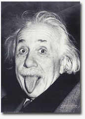

Petite histoire des grands résistants à la Pensée Unique (mis à jour le 16 août 2008)
J'aurais pu aussi bien attribuer le Prix d'Honneur à ces grands savants courageux et obstinés qui, contre vents et marées, ont su discerner et imposer la vérité scientifique alors qu'ils se trouvaient en butte aux tenants de la pensée ambiante. Cela aurait fait le contre-poids du bonnet d'âne que certains se disputent dans ces temps difficiles où il ne fait pas pas bon être d'une opinion contraire à la Pensée Unique !
Alfred Wegener (1880-1930) (histoire détaillée ici) Alfred Wegener n'était pas géophysicien mais météorologue. Particulièrement sportif, il effectuait de longues traversées des continents désertiques et notamment glaciaires. S'il ne fut pas, à proprement parler, le père de l'idée de la théorie de la dérive des continents, il en fut le promoteur acharné, conforté qu'il était par des études très détaillées de la géographie des continents. La théorie de la dérive des continents affirme que la terre était autrefois formée d'un sol bloc (appelé Gondwana) qui s'est peu à peu scindé en plusieurs continents qui ont dérivé jusqu'à leurs positions actuelles (et qui continuent de le faire). Wegener rassembla un très grand nombre de preuves de nature paléontologique, stratigraphique, lithologique, tectonique et volcanique. Malgré les preuves accumulées, il n'était nullement reconnu comme un "spécialiste" aux yeux de ses confrères géologues qui n'acceptaient pas son idée : Il n'était que météorologue, disaient-ils, et donc nullement habilité à parler de géologie. Wegener qui publia sa théorie en 1915 fut immédiatement en butte aux critiques et aux sarcasmes de ses collègues et ceci pendant de nombreuses années. Wegener ne renonça jamais à défendre ses idées. Bien longtemps après sa tragique disparition (il mourut gelé !), la théorie de la dérive des continents faisait toujours l'objet de plaisanteries amusées de la part du gotha des géologues. Voici un exemple de ce qui se publiait en 1924 :"C'est un beau rêve, le rêve d'un grand poète. Mais essaye-t-on de l'étreindre, on s'aperçoit n'avoir dans les bras que de la vapeur, de la fumée. Elle attire, elle intéresse, elle amuse l'esprit, mais la solidité lui manque." (Pierre Termier, La Dérive des continents, Monaco, 1924.). Alfred Wegener disparut en 1930, dans le blizzard d'un glacier du Groenland. Il était toujours discrédité. |
Charles Darwin (1809-1882) (bibliographie plus détaillée ici) . Après avoir entamé des études de médecine puis de pasteur anglican, Charles Darwin devint géologue naturaliste, un peu par la grâce du hasard. Il entreprit de nombreux voyages au cours desquels il collectionnait les fossiles de différentes espèces animales. La Pensée Unique à l'époque où Charles Darwin entreprit ses recherches, expliquait que la création des espèces avait eu lieu par vagues successives. Chaque vague disparaissait à la suite d'une catastrophe naturelle. Les fossiles ne représentaient alors que des traces des espèces disparues, suivant une idée qui est encore chère aux créationistes actuels. Ces idées était inspirées par les textes bibliques qui imposaient, pensait-on, la fixité des espèces parachevées par le Créateur et donc leur immuabilité dans le temps. D'évolution continue, il ne pouvait être question sans heurter la conscience profonde des croyants. La Bible n'affirme t-elle pas que " Dieu créa la terre et l'homme en six jours !" Les multiples observations des fossiles recueillis par Darwin le conduisirent à proposer une théorie dite de l'évolution des espèces dans laquelle les espèces existantes ne sont que les successeurs transformés qui ont lentement évolué au cours des millénaires à partir des espèces précédentes. Ce passage de la discontinuité des espèces achevées à des espèces en évolution (et donc imparfaites) ne pouvaient que susciter une grave hostilité de la part de l'église et des contemporains de Darwin qui refusaient , en particulier, l'idée que l'homme puisse descendre du singe. Le dessin ci-contre, réalisé à l'époque de cette vive controverse, représente la tête de Charles Darwin surmontant un corps de primate. Ses idées qui allaient contre la Bible, selon ses détracteurs, étaient inacceptables et les critiques les plus virulentes pleuvaient sur notre pauvre savant qui, lui non plus, ne renonça jamais à défendre sa théorie de l'évolution. Il fallut attendre la révolution de la génétique moderne et les découvertes de Mendel pour que les idées de darwin soient enfin acceptées comme telles. L'église, pour sa part, finit par affirmer, à la fin du XIXème siècle, qu'il n'y avait pas de contradiction entre la théorie de Darwin et le dogme religieux. Cependant et bien qu'une infinité de preuves en faveur de la théorie de l'évolution de Darwin se soient accumulées et continuent de le faire au cours des avancées de la science, ne croyez pas que tout le monde soit convaincu ! Loin de là. De nos jours, la théorie de l'évolution des espèces de Darwin est encore contestée par les tenants des thèses créationistes. Ces derniers, généralement issus de l'église protestante, sont particulièrement actifs aux Etats Unis où certains Etats proposent d'enseigner les anciennes théories (à côté de celles de Darwin). Vous le voyez, cette fois-ci, la Pensée Unique a vraiment la peau très, très dure ! On pourrait croire que la Pensée Unique en matière de sciences, résulte d'une sorte d'obscurantisme et que son mécanisme de base devrait disparaître dans une société très évoluée du point de vue scientifique, comme la nôtre. Il n'en est rien, hélas ! Bien au contraire, dirais-je. Voyez l'exemple suivant ou un franc-tireur de la science rencontra d'énormes difficultés pour mener à bien une découverte fondamentale pour l'humanité : Celle des lasers, rien que ça ! |
Théodore Maiman (1927-2007): La découverte du premier laser (1960) T. Maiman entama sa carrière comme ingénieur. Travaillant toujours dans le cadre industriel, il devint un spécialiste des masers découverts en 1953 et qui sont des lasers travaillant dans le domaine des microondes. A cette époque beaucoup pensaient que le principe du maser qui fonctionnait pour les microondes ne pourrait fonctionner avec la lumière visible car la puissance nécessaire pour activer cet effet varie comme l'inverse du cube de la longueur d'onde. Pourtant, Un vaste programme destiné à la découverte du "laser", impliquant beaucoup d'argent fédéral (venant notamment du Pentagone), des Universités réputées et de grands centres de recherches (Bell labs, Westinghouse, RCA etc.), fut mis sur pied. Théodore Maiman eut toutes les peines du monde à faire reconnaître et breveter son invention qui était pourtant l'une des plus grandes découvertes du XXème siècle. Maiman fut pratiquement ignoré aux USA mais il reçut les plus brillantes récompenses du Japon et des pays Européens. Il fut nominé deux fois pour le prix Nobel mais ne l'obtint jamais ! Maiman fut constamment maintenu à l'écart de la communauté scientifique de son propre pays. On raconte que son épouse, par bravade sans doute, arborait un magnifique collier portant un des rubis des lasers de son mari. |
John Harrison (1693-1776), un ancien charpentier devenu humble horloger autodidacte, seul contre tous les savants de son époque, dont le grand Newton... Au XVIIème, les navires au long cours, en voyages d'exploration, devaient connaître leur position sur les océans de manière aussi précise que possible. Si la connaissance de la latitude ne pose aucun problème et s'obtient aisément avec un sextant, celle de la longitude est autrement délicate. Elle s'obtenait, à l'époque, en mesurant aussi exactement que possible le temps écoulé depuis le départ. On imagine très bien ce que peu donner une horloge à balancier sur un navire ballotté par la houle après une longue traversée: la précision serait désastreuse. De nombreux navigateurs utilisaient l'observation de la position des astres au dessus du navire pour calculer, avec une très mauvais précision la position de leur bateau. De fait, plusieurs navires disparurent corps et bien au début du XVIIIème siècle par ignorance de leur situation exacte sur l'océan. Les pertes s'accumulèrent et devinrent si alarmantes que la reine Anne d'angleterre promulgua en 1714, une loi connue sous le nom de Longitude Act, qui attribuait un prix de 20000 livres à celui qui trouverait une méthode permettant de donner la longitude à un demi de degré près (c'est à dire, pour une horloge, une erreur de moins de trois secondes par jour). Des prix de moindre importance seraient attribués pour des performances plus modestes.Un "Conseil de Longitude", composé de savants, de navigateurs et de personnalités de la cour fut chargé de distinguer les heureux inventeurs potentiels d'une méthode efficace qui permettrait de sauver les navires de sa majesté. L'enjeu était énorme pour l'époque, de l'ordre de plusieurs millions d'euros... |
Albert Einstein (1879-1955). Tout le monde connaît le grand Albert Einstein qui est considéré par beaucoup comme le génie scientifique du XXème siècle. Par contre, beaucoup ignorent que ce savant exceptionnel connut des débuts très difficiles. Très jeune, il connut l'échec lors sa candidature au Polytechnicum de Zurich où il fut rejetté.Il végéta quelque temps et ne trouva d'autre travail rémunéré qu'un emploi d'examinateur de brevets dans une officine de Berne (Suisse). |
Philippe-Ignace Semmerlweis (1818-1865) découvrit à Budapest les bienfaits de la prophylaxie (sans identifier le mécanisme de l’infection bactérienne). Après avoir subi les revers et l’injustice il devint fou.
Jacques Boucher de Perthes (1788-1868) se bat pendant vingt ans pour faire admettre l’iéde qu’aient pu exister des hommes préhistoriques.
Alphonse Beau de Rochas (1815-1893) invente en pure perte le principe du moteur à quatre temps, il mourra lui aussi dans la misère, oublié de tous.
Ludwig Boltzmann (1844-1906) finira par se suicider face à son incapacité à promouvoir ses idées trop en avance. Sur sa tombe se trouve gravée la formule donnant l’entropie. |
Les médecins chercheurs J. R. Warren et B. J. Marshall, découvreurs de la bactérie Helicobacter pylori à l'origine de nombreux ulcères stomacaux et gastriques, ont été les victimes du "consensus" du monde médical. (plus de détails ici)
En 1875, des scientifiques allemands découvrirent une bactérie hélicoïdale dans des estomacs humains. Celle-ci ne pouvait être cultivée et les recherches la concernant furent finalement abandonnées. L'hypothèse H. pylori fut moquée par la communauté médicale, qui ne croyait pas que des bactéries puissent survivre dans un environnement aussi acide que l'estomac. En 1984, dans le but d'inciter la communauté à croire à leur hypothèse, Marshall a avalé une éprouvette de culture et a développé en moins d'une semaine un ulcère gastrique, qu'il a ensuite guéri avec des antibiotiques. Cette découverte valut au courageux Barry J. Marshall et à J. Robin Warren, le prix Nobel de physiologie et de médecine 2005. Mais il leur a fallu subir, pendant une bonne dizaine d'années, les sarcasmes de leurs collègues adeptes du consensus... Un grand merci au lecteur qui m'a fait passer cet texte. Mis à jour le 06/10/2008 |